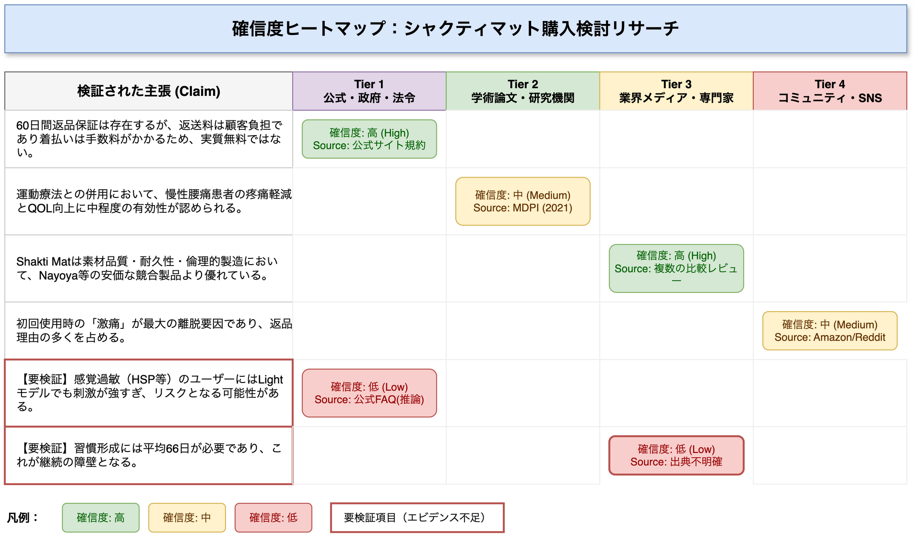
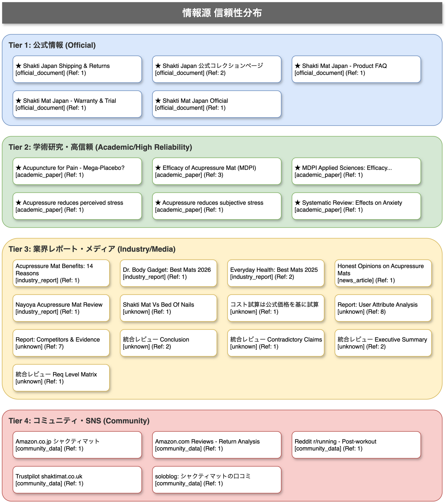
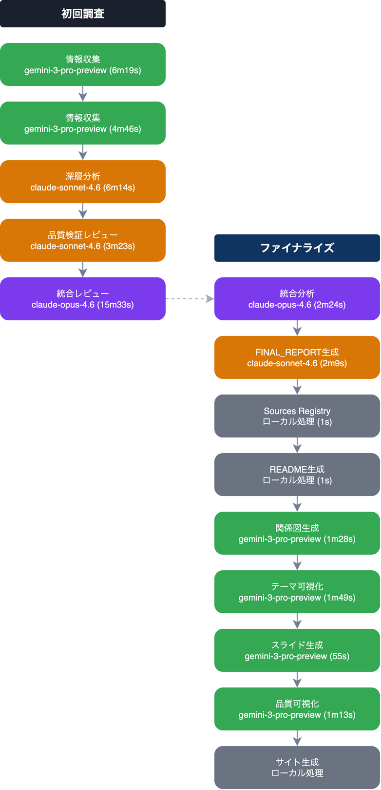

本ページは調査プロセスの品質を可視化したメタデータです。調査テーマの内容ではなく、この調査自体の信頼性を確認するための情報です。各主張の確信度分布や、情報源の信頼性階層を確認することで、どの部分に追加の裏取りが必要かを判断できます。

各主張の確信度（High/Medium/Low）の分布。Lowの主張は追加の裏取りが必要です

情報源の信頼性階層（Tier 1〜4）の分布。Tier 3-4に依存する主張は注意が必要です
各ステップで使用されたAIモデルと処理の流れを可視化しています

調査中の全イベント（モデル呼び出し・応答・エラー等）の生ログを確認できます
実行ログを表示 →